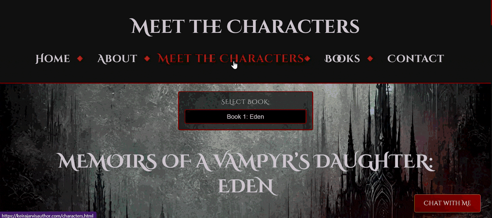
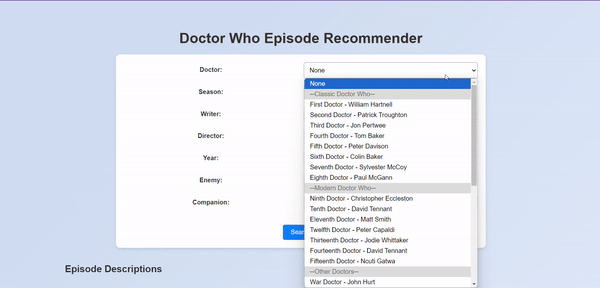

AI Assisted Feedback
Developed structured feedback workflows that use AI to support consistency, speed, and clarity across learner submissions.
AI, Digital Skills & Technical Education
I design and deliver practical technical training across software, AI, cybersecurity, networking, data, and digital skills, while building AI-assisted workflows that make learning clearer, more structured, and more scalable.
About Me
I am a Technical Instructor with experience delivering structured, practical training across technical and digital subjects. My work combines clear teaching, hands-on development, learner support, and AI-assisted systems that make technical learning more accessible and effective.
I teach across software development, social media marketing, networking, data, AI, and cybersecurity, with a focus on practical skills and clear learner progression.
I create learner-focused resources, scaffolded guides, assessment support, curriculum materials, and structured teaching systems.
I use AI and automation to improve feedback, reduce repetitive admin, support debugging, and strengthen learner confidence.
Core Expertise
AI Contributions
Developed structured feedback workflows that use AI to support consistency, speed, and clarity across learner submissions.
Created scaffolded resources, guided examples, and assessment support materials to help learners understand complex technical tasks.
Built and refined automated processes for repetitive teaching and admin tasks, improving reliability and reducing manual workload.
Integrated AI into technical teaching for debugging, planning, research, review, accessibility, and problem solving.
Selected Projects
Interactive Pokémon application using API integration, responsive design, and dynamic rendering.
View ProjectEducational cybersecurity experience designed to make technical awareness more engaging and accessible.
View Project
Professional author platform focused on presentation, storytelling, readability, and visual identity.
View Project
Interactive recommendation engine using custom JSON data structures and conditional logic.
View Project